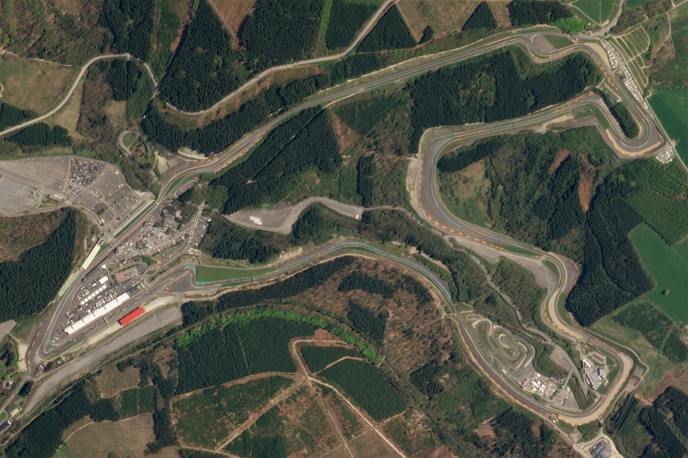

Понятие
Кольцевые гонки — общий термин для большинства видов автомобильных и мотоциклетных гонок, проводящийся на специально построенных гоночных трассах (автодромах) с ровным твёрдым покрытием.
Название гонки связано с тем, что в ходе соревнований автомобиль движется по замкнутой траектории («кольцу»).

Пример гоночной трассы:
Circuit de Spa-Francorchamps
Автомобили
Автомобили, предназначенные для кольцевых гонок, как правило, специально подготовлены для движения по ровному покрытию, обеспечивающему хорошее сцепление с дорогой и, как результат, высокие боковые ускорения. Как и в других автомотоспортивных дисциплинах, такие автомобили подразделяются на классы или зачетные группы. Примеры таких классов в автоспорте — Формула-1, Формула-2, Формула-3, GP2, GP3, GT1, GT2, GT3
Гоночная версия автомобиля Audi RS5
Гражданская версия автомобиля Audi RS5
Подготовленные для соревнований машины, всегда стараются максимально облегчить: демонтируют лишние элементы интерьера, заменяют стандартные детали на облегченные. Крайне важную роль в подготовке автомобиля играет аэродинамика. Правильно подобранные кузовные элементы обеспечивают лучшую прижимную силу, что позволяет проходить повороты на больших скоростях и значительно улучшать время круга, в сравнении с немодифицированным автомобилем.
Правила
Трасса: закрытый гоночный трек сложной конфигурации с большим количеством поворотов
Покрытие: асфальт
Правила: на бумаге условия просты, нужно проехать несколько кругов быстрее соперников и успешно пройти повороты. Но на деле все эти шпильки, апексы, эски и шиканы приносят пилотам и зрителям немало адреналина. Кольцевые гонки — те самые, о которых все мечтают: скорость, болиды с кучей кнопок, комбинезоны, которые не берет горящее топливо, рев моторов, визг шин…
Кузовной чемпионат IMSA WeatherTech SportsCar Championship
Известные мероприятния
Самыми известными заездами являются "гонки на выносливость".
Трасса: закрытые кольцевые гоночные треки.
Покрытие: асфальт
Правила: Название говорит само за себя: нужно продемонстрировать не только мастерство, но и стойкость духа и организма. И техники!Как у простых смертных, у пилотов есть потребности вроде еды и сна, но на время гонок на первое место выходят дорога, скорость и соблюдение правил. В мировом чемпионате участвуют два класса прототипов и два кузовных — GT. На пит-стопах пилоты меняются и проверяют состояние машин: необходимо пройти трассу первым в своем классе, но мешают поломки, которые иногда приходится устранять по часу и более.
24 часа Ле-Мана (24 Heures du Mans) — старейшая в мире гонка на выносливость, которая проходит во Франции на трассе «Сартэ» с 1923 года. Выигрывает экипаж, который смог преодолеть наибольшую дистанцию за 24 часа, ведь цель этой гонки всегда была одна — определить самый надежный и экономичный автомобиль. Заезд проводится летом, и дело зачастую осложняется жарой, но никакие трудности не останавливают тех, кто хочет надеть символическую «Тройную корону» гонок на выносливость, победив еще и в «24 часах Дайтоны» и «12 часах Себринга». Кстати, гонки Ле-Мана входят и в тройное комбо всея автоспорта: это победа в них, «Формуле-1» и на гонках IndyCar. Авторитет «24 часов Ле-Мана» таков, что победа в этой гонке считается многими пилотами и командами важнее, чем победа во всем чемпионате мира.
24 часа Нюрбургринга — гонка, которая существует с 1970 года и проводится при поддержке самого крупного в мире немецкого автоклуба ADAC. Северную петлю Нюрбургринга не зря называют «Зеленым адом» — это одна из самых опасных трасс в мире. На старт на Нордшляйфе, который разделяют на три группы, попадают 220 спорткаров. Гонщиков около восьми сотен, по три-шесть человек на экипаж, каждый из которых имеет право провести за рулем не более двух с половиной часов.
24 часа Нюрбургринга 2018